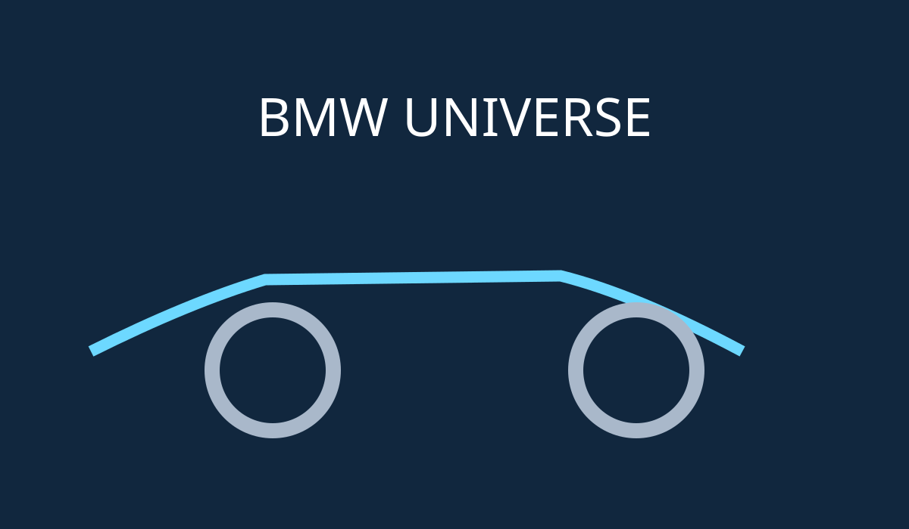

BMW Universe — O prazer de dirigir.
Em todas as versões.
Explore a história, os estilos e a personalidade dos modelos BMW: dos sedãs clássicos aos esportivos M, SUVs e elétricos.
Uma marca, muitas experiências.
A BMW é uma fabricante alemã reconhecida por sua tradição em engenharia automotiva. Seu portfólio abrange hatches, sedãs, coupés, conversíveis, SUVs, veículos elétricos e modelos de alta performance.
Este catálogo apresenta uma seleção de diferentes gerações e versões. A disponibilidade e as especificações variam conforme o país e o ano.
Descobrir as categorias →O que você encontra aqui
- Modelos clássicos, esportivos e elétricos da BMW.
- Busca por nome e filtros por categoria.
- Favoritos e avaliações salvos neste navegador.
Explore cada estilo de dirigir.
26 versões com busca, filtros e fotografias reais consultadas no Wikimedia Commons. Clique em um modelo para avaliá-lo.
Créditos das fotografias: cada imagem possui um link para sua página no Wikimedia Commons, com autor e licença. As imagens são carregadas pela internet; em caso de indisponibilidade, é exibido um link para localizar a fotografia.
BMW de diferentes propostas
Exemplos ilustrativos de gerações e carrocerias; não representam especificações técnicas de todas as versões.
| Modelo | Categoria | Carroceria / proposta | Período listado |
|---|---|---|---|
| 320i F30 | Série 3 | Sedã esportivo | 2012–2019 |
| M3 G80 | BMW M | Sedã de alto desempenho | 2021–atual |
| X5 G05 | SUVs X | SUV de luxo | 2018–atual |
| i4 G26 | Elétricos | Gran Coupé elétrico | 2021–atual |
Explore o universo BMW
Apresentação visual do catálogo
Animação gráfica original criada para o projeto; não é filmagem oficial da BMW.
Modelos por categoria
O gráfico SVG é atualizado a partir dos 26 modelos do catálogo.
Seus BMW favoritos
Use o botão Favoritar nos cards. Os favoritos ficam salvos somente neste navegador.
Nenhum modelo favoritado.
Qual é sua BMW favorita?
Selecione um modelo, atribua de 1 a 5 estrelas e compartilhe sua opinião. Avaliações salvas apenas neste navegador.
Nenhuma avaliação registrada.